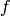
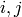
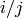
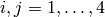

Navigation
- index
- next |
- previous |
- Sage Tutorial v4.3 »

Sage使用通用接口和简洁的程序语言实现“在一个屋檐下” 调用许多不同的计算机代数系统进行计算。
接口的控制台和交互模式做不同的事情。如，使用GAP：
PARI是一个紧凑的，非常成熟的，高度优化主要关注数论的C语言程序， 在Sage中有两种不同的接口可以调用：
例如，下面两种方法做同一件事情。它们看上去相同，但是输出完全不同， 而且背后所发生的事情也完全不同。
sage: gp('znprimroot(10007)')
Mod(5, 10007)
sage: pari('znprimroot(10007)')
Mod(5, 10007)
前者，一个独立的GP解释器作为服务器运行，字符串 'znprimroot(10007)' 传给它，由GP执行，并将结果赋给一个GP变量 (占用GP子进程的内存空间并且不会被释放)。然后变量的值显示出来。 后者，没有运行单独的程序，字符串 'znprimroot(10007)' 由特定的PARI的C语言库函数执行。结果存储在Python的堆中， 当不再使用时会被释放。两个对象的类型不同：
sage: type(gp('znprimroot(10007)'))
<class 'sage.interfaces.gp.GpElement'>
sage: type(pari('znprimroot(10007)'))
<type 'sage.libs.pari.gen.gen'>
那么应该用哪一个？取决于你要做什么。 在通常GP/PARI命令行中可以做的任何事情都可以在GP接口中做， 因为运行的就是那个程序。特别的，你可以载入复杂的PARI程序并执行。 相反，PARI接口（通过C语言库）方式限制更多。首先， 并没有实现所有的成员函数。第二，很多代码，比如涉及数值积分， 不能通过PARI接口执行。也可以说，PARI接口方式比GP接口方式更快， 稳定性更好。
(如果GP接口方式执行一个给定的输入行时内存溢出，它会自动将堆栈大小翻番， 并重试。这样，如果你没有正确预计所需的内存量，计算也不会崩溃。 这是一个不错的技术，但是通常的GP解释器并不提供。对于PARI的C语言库接口， 它会立即将已建立的对象复制出堆栈，这样堆栈就不会再增长了。 但是每一个对象不能超过100MB，否则建立这个对象的时候，堆栈就会溢出。 额外的复制操作会稍微影响性能。)
总之，除了使用不同的高级内存管理策略和Python语言之外， Sage使用PARI的C语言库所提供的功能与GP/PARI解释器所提供的功能接近。
首先我们从Python列表新建一个PARI列表。
sage: v = pari([1,2,3,4,5])
sage: v
[1, 2, 3, 4, 5]
sage: type(v)
<type 'sage.libs.pari.gen.gen'>
每一个PARI对象都是 py_pari.gen 类型的。 基本对象的PARI类型可由成员函数 type 得到。
sage: v.type()
't_VEC'
在PARI中，使用 ellinit([1,2,3,4,5]) 新建一个椭圆曲线。 Sage中是类似的，只是 ellinit 是一个方法， 可由任何PARI对象调用，如，我们的 t_VEC v.
sage: e = v.ellinit()
sage: e.type()
't_VEC'
sage: pari(e)[:13]
[1, 2, 3, 4, 5, 9, 11, 29, 35, -183, -3429, -10351, 6128487/10351]
现在我们有一个椭圆曲线对象，可以对它进行一些运算。
sage: e.elltors()
[1, [], []]
sage: e.ellglobalred()
[10351, [1, -1, 0, -1], 1]
sage: f = e.ellchangecurve([1,-1,0,-1])
sage: f[:5]
[1, -1, 0, 4, 3]
Sage使用GAP 4.4.10计算离散数学，特别是群论。
这有一个关于GAP的 IdGroup 函数的例子， 它依赖一个小的群数据库，需要单独安装，后面有说明。
sage: G = gap('Group((1,2,3)(4,5), (3,4))')
sage: G
Group( [ (1,2,3)(4,5), (3,4) ] )
sage: G.Center()
Group( () )
sage: G.IdGroup() # requires optional database_gap package
[ 120, 34 ]
sage: G.Order()
120
可以在Sage中进行同样的计算，而且不需要明确的调用GAP的接口。
sage: G = PermutationGroup([[(1,2,3),(4,5)],[(3,4)]])
sage: G.center()
Permutation Group with generators [()]
sage: G.group_id() # requires optional database_gap package
[120, 34]
sage: n = G.order(); n
120
(对于某些GAP功能，需要安装两个Sage的可选包。 输入 sage -optional 显示列表并选择形如 gap_packages-x.y.z 的包，然后输入 sage -i gap_packages-x.y.z. 同样安装 database_gap-x.y.z. 那些不采用GPL协议的GAP包，需要从GAP网站 [GAPkg] 上下载， 再解压到 $SAGE_ROOT/local/lib/gap-4.4.10/pkg.)
Singular提供了大量的，成熟的关于Gröbner基，多元多项式最大公因式， 平面曲线的Riemann-Roch空间的基，因式分解等内容的库函数。 我们使用Sage的Singular接口展示多元多项式的因式分解(... 不需要输入):
sage: R1 = singular.ring(0, '(x,y)', 'dp')
sage: R1
// characteristic : 0
// number of vars : 2
// block 1 : ordering dp
// : names x y
// block 2 : ordering C
sage: f = singular('9*y^8 - 9*x^2*y^7 - 18*x^3*y^6 - 18*x^5*y^6 + \
... 9*x^6*y^4 + 18*x^7*y^5 + 36*x^8*y^4 + 9*x^10*y^4 - 18*x^11*y^2 - \
... 9*x^12*y^3 - 18*x^13*y^2 + 9*x^16')
现在已经定义了 , 我们输出它和它的因式。
sage: f
9*x^16-18*x^13*y^2-9*x^12*y^3+9*x^10*y^4-18*x^11*y^2+36*x^8*y^4+18*x^7*y^5-18*x^5*y^6+9*x^6*y^4-18*x^3*y^6-9*x^2*y^7+9*y^8
sage: f.parent()
Singular
sage: F = f.factorize(); F
[1]:
_[1]=9
_[2]=x^6-2*x^3*y^2-x^2*y^3+y^4
_[3]=-x^5+y^2
[2]:
1,1,2
sage: F[1][2]
x^6-2*x^3*y^2-x^2*y^3+y^4
跟 GAP 中GAP的例子一样， 我们可以不用明确的调用Singular来进行上面的因式分解 (但是Sage在后台是调用Singular接口进行实际的计算)。
sage: x, y = QQ['x, y'].gens()
sage: f = 9*y^8 - 9*x^2*y^7 - 18*x^3*y^6 - 18*x^5*y^6 + 9*x^6*y^4\
... + 18*x^7*y^5 + 36*x^8*y^4 + 9*x^10*y^4 - 18*x^11*y^2 - 9*x^12*y^3\
... - 18*x^13*y^2 + 9*x^16
sage: factor(f)
(9) * (-x^5 + y^2)^2 * (x^6 - 2*x^3*y^2 - x^2*y^3 + y^4)
Maxima包含在Sage中，是用clisp (Lisp语言的一种) 实现的。 Maxima所使用的开源的基于Tk/Tcl的绘图程序 openmath 随Sage一同发布。 然而，gnuplot包（Maxima默认的绘图程序）作为Sage的可选包发布。 除了别的功能，Maxima可以做符号计算。Maxima可以做符号积分和微分， 解1阶常微分方程组，大多数2阶线性常微分方程组， 并且实现了对任意阶的线性方程组进行Laplace变换。 Maxima还了解很多特殊函数，能够通过gnuplot绘图，进行矩阵运算 (如行消去，特征值和特征向量)，以及求解多项式方程组。
我们通过构造矩阵来展示Sage的Maxima接口，其中  项是 , .
sage: f = maxima.eval('ij_entry[i,j] := i/j')
sage: A = maxima('genmatrix(ij_entry,4,4)'); A
matrix([1,1/2,1/3,1/4],[2,1,2/3,1/2],[3,3/2,1,3/4],[4,2,4/3,1])
sage: A.determinant()
0
sage: A.echelon()
matrix([1,1/2,1/3,1/4],[0,0,0,0],[0,0,0,0],[0,0,0,0])
sage: A.eigenvalues()
[[0,4],[3,1]]
sage: A.eigenvectors()
[[[0,4],[3,1]],[[[1,0,0,-4],[0,1,0,-2],[0,0,1,-4/3]],[[1,2,3,4]]]]
另外一个例子：
sage: A = maxima("matrix ([1, 0, 0], [1, -1, 0], [1, 3, -2])")
sage: eigA = A.eigenvectors()
sage: V = VectorSpace(QQ,3)
sage: eigA
[[[-2,-1,1],[1,1,1]],[[[0,0,1]],[[0,1,3]],[[1,1/2,5/6]]]]
sage: v1 = V(sage_eval(repr(eigA[1][0][0]))); lambda1 = eigA[0][0][0]
sage: v2 = V(sage_eval(repr(eigA[1][1][0]))); lambda2 = eigA[0][0][1]
sage: v3 = V(sage_eval(repr(eigA[1][2][0]))); lambda3 = eigA[0][0][2]
sage: M = MatrixSpace(QQ,3,3)
sage: AA = M([[1,0,0],[1, - 1,0],[1,3, - 2]])
sage: b1 = v1.base_ring()
sage: AA*v1 == b1(lambda1)*v1
True
sage: b2 = v2.base_ring()
sage: AA*v2 == b2(lambda2)*v2
True
sage: b3 = v3.base_ring()
sage: AA*v3 == b3(lambda3)*v3
True
最后，我们给一个通过Sage调用 openmath 绘图的例子。 这里很多内容是根据Maxima参考手册修改而来。
绘制多个函数的二维图像：
sage: maxima.plot2d('[cos(7*x),cos(23*x)^4,sin(13*x)^3]','[x,0,1]',\
... '[plot_format,openmath]') # not tested
“实时”的三维图像，你可以用鼠标拖动：
sage: maxima.plot3d ("2^(-u^2 + v^2)", "[u, -3, 3]", "[v, -2, 2]",\
... '[plot_format, openmath]') # not tested
sage: maxima.plot3d("atan(-x^2 + y^3/4)", "[x, -4, 4]", "[y, -4, 4]",\
... "[grid, 50, 50]",'[plot_format, openmath]') # not tested
下面是著名的Möbius带：
sage: maxima.plot3d("[cos(x)*(3 + y*cos(x/2)), sin(x)*(3 + y*cos(x/2)),\
... y*sin(x/2)]", "[x, -4, 4]", "[y, -4, 4]",\
... '[plot_format, openmath]') # not tested
下面是著名的Klein瓶：
sage: maxima("expr_1: 5*cos(x)*(cos(x/2)*cos(y) + sin(x/2)*sin(2*y)+ 3.0)\
... - 10.0")
5*cos(x)*(sin(x/2)*sin(2*y)+cos(x/2)*cos(y)+3.0)-10.0
sage: maxima("expr_2: -5*sin(x)*(cos(x/2)*cos(y) + sin(x/2)*sin(2*y)+ 3.0)")
-5*sin(x)*(sin(x/2)*sin(2*y)+cos(x/2)*cos(y)+3.0)
sage: maxima("expr_3: 5*(-sin(x/2)*cos(y) + cos(x/2)*sin(2*y))")
5*(cos(x/2)*sin(2*y)-sin(x/2)*cos(y))
sage: maxima.plot3d ("[expr_1, expr_2, expr_3]", "[x, -%pi, %pi]",\
... "[y, -%pi, %pi]", "['grid, 40, 40]",\
... '[plot_format, openmath]') # not tested
| [GAPkg] | GAP Packages, http://www.gap-system.org/Packages/packages.html |